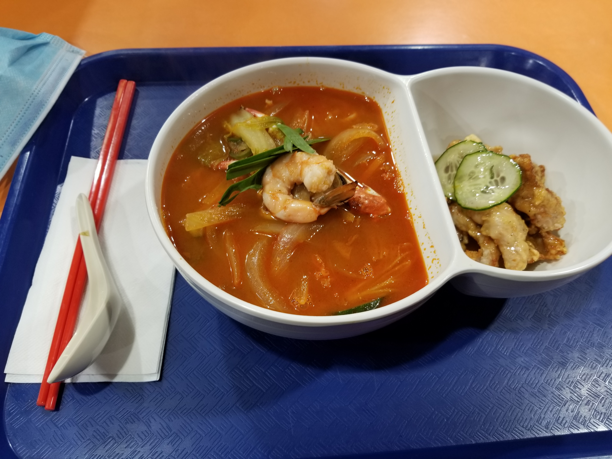

정원의 일상, 2월 28일 - 3월 6일
2월 28일, 일요일
아침 일찍부터 일어나서 대충 밥 먹고 애기들도 밥 좀 주고 시카고 오헤어 공항으로 출발했다. 아빠랑 헤어지는 것도 모르는 애들은 공항에서 이것저것 만지고 돌아다니고 싶었나보다. 도와주시는 분이 있어서 조금 마음이 놓이긴 했지만 힘들거 뻔히 알기에 걱정이 많이 되었다. 도와주시는 분은 공항 검색대에서 시간이 얼마 걸릴지 모른다고 가자고 했고, 웨건에 앉기 싫어하는 애들을 겨우 태우고는 그렇게 검색대로 향했고 가족들과 헤어졌다. 하은이와 하성이 우는 소리가 계속 들렸고 마음이 너무 아팠다. 주차장으로 가면서 계속 울고 후회했던거 같다. 그냥 힘들어도 같이 있을걸 그랬나? 사실 공항으로 가는 차 안에서도 아내에게 묻고 싶었다. "지금 가지 말라고 하면 여기 있어줄래?". 근데 바보 같이 말 못하고 가족들 보내고 그렇게 혼자 장을 보러 갔다. H 마트에 가서 일단 점심을 먹었다. 교동짬뽕과 탕수육.
